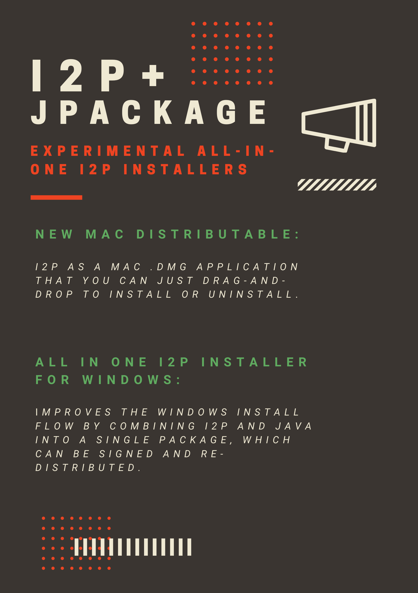

Traditionally, I2P runs using a Java Runtime Environment which exists on
the host machine. This requirement adds a series of "Extra" steps to
install I2P on most platforms. With these installers, I2P comes with a
Java "Runtime Image" created using a tool called jpackage. jpackage
allows us to collect all the libraries and tools required to run I2P
into a single, consistent package which is easy to install and redistribute.
It means an easier-to-understand and faster I2P installation process, which involves less third-party software.
Well because we haven't decided to yet. Besides that, we need to make sure that we can update the I2P router it installs at update time correctly, and a few other little things. You can find out more about development at the wiki pages below.
If you choose to install this software you will need to manually update it at least once at a future date. Automatic updates are not available at this time.
If you have Firefox installed on your Windows 10 PC, you can simply download the Github Release of the All-in-One-Installer.exe below. Double click the installer and step through the process. Once you're done, I2P will start and Firefox will launch configured for I2P.
If you are using Mac OSX, the .dmg file is a normal Mac application image. Install it just like any other Mac application.